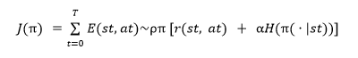

STEM with Science and Technical Writing is taught by Dr. Crowthers. In the first semester, we worked extensively on the independent research project, a project spanning 7 months in which we gained experience in brainstorming, research, project management, and technical writing—among other scientific skills. My project focuses on using deep reinforcement learning to generate synthesizable drug compounds by performing bottom-up chemical synthesis. Much of my project was inspired by the work I did at the Lin research group, where I used deep learning and cheminformatics tools to predict quantum chemical properties of molecules. For my independent research, I wanted to extend my scope to the generation of molecules, specifically drug compounds. Read more about my project below:
Aaron Tian
Instructor: Kevin Crowthers, Ph.D.
In this project, a novel framework for the prediction of synthesizable drug compounds is proposed.
Computational drug design may be put in a wider context if generative models are designed to account for chemical synthesis; previous deep learning-based approaches to molecular design produced a large proportion of synthetically inaccessible compounds. The objective of this project is to create a goal-driven reinforcement learning model for synthesizable optimization of drug compounds via synthetic tree modification. In prior work, most autoregressive approaches to novel compound generation successfully accounted for chemical validity by incorporating explicit restraints and were shown to be effective at optimizing molecular properties. However, a large percentage of the generated compounds could not be synthesized. The framework proposed in this study implicitly guarantees synthesizability in the state space of its underlying Markov Decision Process (MDP) and employs the Soft Actor-Critic (SAC) reinforcement learning algorithm for efficient model-free policy optimization. The reward signal can be adjusted to target specific molecular properties. In this study, it is shown that SAC allows for greatly increased sample efficiency in comparison to previous approaches and comparable effectiveness for goal-based lead optimization. Further research must be done to develop accurate models for predicting pharmacokinetic/ADME properties of small molecules, enabling the framework to optimize for more pharmacologically relevant molecules in lieu of the heuristically calculated quantitative estimate of drug-likeness score.
The use of deep learning in drug design may drastically reduce development costs and turnaround time; however previous computational approaches to molecular design produced a large proportion of synthetically inaccessible compounds.
The objective of this project is to create a goal-driven reinforcement learning model for lead optimization that accounts for synthetic accessibility in the generation process.
The discovery of new small molecule drugs is a time-consuming and expensive process, costing over $2.5 billion and taking 10 to 15 years on average (DiMasi et al., 2016). To compensate for these costs, pharmaceutical companies rely heavily on the blockbuster model, in which a small number of successful drugs--each generating over $1 billion annually--drive the majority of sales (Malik, 2008). Under this paradigm, existing blockbusters must be promptly replaced by new ones when their patents expire, as their prices drop by up to 80% within 6 to 12 months of expiration. However, finding replacements may prove to be increasingly difficult, as drugs are now being released at a slower rate: the average number of globally launched drugs decreased from 44 between 1995 and 2000 to 33 from 2001 to 2006. This fact, alongside a rise in biologic treatments, foreshadows an unpromising future for small molecule therapeutics. Nonetheless, the benefits of small molecule drugs—simple dosing protocols, ease of manufacture, and oral bioavailability—should not be ignored (Ngo & Garneau-Tsodikova, 2018). It may be possible to revive small molecule drug development by automating specific processes within the industry, such as the discovery stages of hit-to-lead and lead optimization.
Recent advances in computational hardware, coupled with breakthrough discoveries in deep learning, have sparked a newfound interest in applying artificial intelligence methods to drug discovery. While deep learning models impact numerous stages within the drug discovery process, the task of molecule generation is arguably the most relevant, as it directly involves the creation and optimization of new drug compounds. Current deep learning-based approaches to molecule generation can be categorized into two archetypes: autoregressive and non-autoregressive. Autoregressive models formulate molecule generation as an iterative process where slight modifications are repeatedly performed on an atomic structure, while non-autoregressive models generate the final output in one computational step. The performance of these models are assessed on three criteria: validity, referring to the resulting compounds’ adherence to simple chemical rules, such as the octet rule of valency; novelty, referring to the amount of generated molecules not present in the training dataset; and uniqueness, referring to the amount of variance between the model’s output molecules (Xiong et al., 2021). A clear tradeoff between these criteria is prevalent in the literature concerning autoregressive and non-autoregressive models. Autoregressive approaches can achieve high validity scores by leveraging chemical rules to restrict the set of allowable actions at each iteration but tend to have poorer novelty and uniqueness scores because the outputs converge to a single optimal compound. It is also more efficient to adapt autoregressive algorithms for molecular optimization tasks by simply treating a lead compound as the initial state instead of the empty set. Non-autoregressive approaches generally produce a wider variance and are less computationally expensive; however, they cannot consistently generate chemically valid structures due to the lack of syntactical constraints in the output notation.
There are many classes of deep learning models which fall under the autoregressive category, but reinforcement learning methods (RL) are currently the most prominent. A study by Zhou et al. (2019) implemented MolDQN, a reinforcement learning framework for molecular optimization driven by deep Q-learning and a Markov Decision Process (MDP). MolDQN was designed for multi-objective learning, meaning that the model was capable of optimizing several molecular properties simultaneously—a highly desirable feature in drug discovery. The algorithm iteratively selected modifications from a set of actions (atom addition, bond addition, and bond removal) to perform on a molecular structure and was parameterized by the desired output properties. Their design led to a 100% validity score because the model defined an inductive bias for chemical validity in the action space by selectively excluding modifications that would result in an invalid structure. However, the model experienced slow convergence—an issue shared by nearly all reinforcement learning-based methods.
Shi et al. (2020) similarly used reinforcement learning to tune their generative framework but employed a fundamentally different policy network to speed up the training process. GraphAF used a normalizing flow model as its policy network, which defines an invertible transformation between a base distribution and the chemical space. Using an algorithm based on the change of variables formula, the network effectively made conversions between the two data representations. The design of the algorithm allowed for parallel execution, which significantly reduced computational overhead. Similar to MolDQN, the framework for GraphAF used an autoregressive process to iteratively modify a base structure and was capable of multi-target optimization.
All reinforcement learning models in this project were developed in Python 3.8. The following Python libraries were used: rdkit for cheminformatics functionality; numpy and pandas for importing and processing numerical data; matplotlib for data visualization; and PyTorch for creating and optimizing models. Model training was run on a personal computer with Windows 10 operating system and NVIDIA GTX 2070 graphics card.
Following the direction of Gao et al. (2021), molecular fingerprints were used as the representation of choice; no significant benefits of other representational methods—namely, Graph Isomorphism Networks and molecular descriptors—were observed in their empirical testing. Results are shown for Morgan fingerprints of radius 2 and various bit vector dimensions.
A collection containing 57 organic synthesis reactions in SMIRKS format from Hartenfeller et al. (2011) was used as the dataset of reaction templates for reaction prediction. Purchasable building blocks in SMILES format were provided by Irwin et al. (2012). Rdkit was used to apply reaction templates to the building blocks.
The Soft Actor-Critic (SAC) algorithm, proposed by Haarnoja et al. (2018), forms the basis of the generative framework. The algorithm is shown to be effective at complex action and state spaces with high sample efficiency. SAC features the addition of an expected entropy term in the optimization objective (Equation 1), scaled by the temperature parameter α.
Haarnojo et al. (2018) show that the incorporation of expected policy entropy in the optimization term significantly improves convergence speed and sample efficiency, which is a crucial counterbalance to the inherently complex and expensive-to-sample state space.
The results shown in Figure 1 demonstrate drastic variability in the model performance based on the predefined reaction prioritization order. This suggests that further improvements can be made to the model either by treating the order of reactions as a hyperparameter and optimizing it through random search, or extending the framework to predict the best reaction alongside the reactants. The latter option was considered in the implementation of the model but was not pursued because the number of available reactions varied heavily based on the reactants, and was thus impractical to model with a static prediction space.
Figure 2 displays the results of a second test, in which a subset of 50 lead molecules selected from the ZINC “Clean Leads” database by Irwin et al. (2012) were passed as optimization targets to the model. The top-1 scoring molecule for quantitative estimate of drug-likeness (QED) was selected from each run. The results demonstrate the ability of the model to perform molecular property optimization. An unpaired t-test comparing the QED of the two molecular sets yielded a p value < 0.001, showing that the optimization did indeed affect the QED of the lead molecule.
In this project, a lightweight reinforcement learning-based model for lead optimization was developed. In comparison to previous works, the soft-actor critic approach shows greater balance between sample efficiency, computational complexity, and model performance. On average, the model takes < 2 minutes to train on a given target, making it a feasible option for rapid optimization of a curated selection of lead compounds.
Future work must be done to extend the action set to a multi-discrete problem in which the agent makes predictions for both the reactant and the reaction. Curating a specifically designed database for reaction selection through domain knowledge will also achieve the same ends. The framework itself may be further optimized through rigorous hyperparameter searching.
DiMasi, J. A., Grabowski, H. G., & Hansen, R. W. (2016). Innovation in the pharmaceutical industry: New estimates of R&D costs. Journal of Health Economics, 47, 20–33. https://doi.org/10.1016/j.jhealeco.2016.01.012
Gao, W., & Coley, C. W. (2020). The Synthesizability of Molecules Proposed by Generative Models. ArXiv:2002.07007 [Cs, q-Bio, Stat]. http://arxiv.org/abs/2002.07007
Gao, W., Mercado, R., & Coley, C. W. (2021). Amortized Tree Generation for Bottom-up Synthesis Planning and Synthesizable Molecular Design. ArXiv:2110.06389 [Cs, q-Bio]. http://arxiv.org/abs/2110.06389
Haarnoja et al. - 2018—Soft Actor-Critic Off-Policy Maximum Entropy Deep.pdf. (n.d.). Retrieved February 9, 2022, from https://arxiv.org/pdf/1801.01290.pdf
Haarnoja, T., Zhou, A., Abbeel, P., & Levine, S. (2018). Soft Actor-Critic: Off-Policy Maximum Entropy Deep Reinforcement Learning with a Stochastic Actor. ArXiv:1801.01290 [Cs, Stat]. http://arxiv.org/abs/1801.01290
Horwood, J., & Noutahi, E. (2020). Molecular Design in Synthetically Accessible Chemical Space via Deep Reinforcement Learning. ACS Omega, 5(51), 32984–32994. https://doi.org/10.1021/acsomega.0c04153
Lipinski, C. A., Lombardo, F., Dominy, B. W., & Feeney, P. J. (1997). Experimental and computational approaches to estimate solubility and permeability in drug discovery and development settings. Advanced Drug Delivery Reviews, 23(1), 3–25. https://doi.org/10.1016/S0169-409X(96)00423-1
Malik, N. N. (2008). Drug discovery: Past, present and future. Drug Discovery Today, 13(21–22), 909–912. https://doi.org/10.1016/j.drudis.2008.09.007
Ngo, H. X., & Garneau-Tsodikova, S. (2018). What are the drugs of the future? MedChemComm, 9(5), 757–758. https://doi.org/10.1039/C8MD90019A
Rogers and Hahn—2010—Extended-Connectivity Fingerprints.pdf. (n.d.). Retrieved February 9, 2022, from https://pubs.acs.org/doi/pdf/10.1021/ci100050t
Rogers, D., & Hahn, M. (2010). Extended-Connectivity Fingerprints. Journal of Chemical Information and Modeling, 50(5), 742–754. https://doi.org/10.1021/ci100050t
Shi, C., Xu, M., Zhu, Z., Zhang, W., Zhang, M., & Tang, J. (2020). GraphAF: A Flow-based Autoregressive Model for Molecular Graph Generation. ArXiv:2001.09382 [Cs, Stat]. http://arxiv.org/abs/2001.09382
Weininger, D. (1988). SMILES, a chemical language and information system. 1. Introduction to methodology and encoding rules. Journal of Chemical Information and Modeling, 28(1), 31–36. https://doi.org/10.1021/ci00057a005
Zhou, Z., Kearnes, S., Li, L., Zare, R. N., & Riley, P. (2019). Optimization of Molecules via Deep Reinforcement Learning. Scientific Reports, 9(1), 10752. https://doi.org/10.1038/s41598-019-47148-x